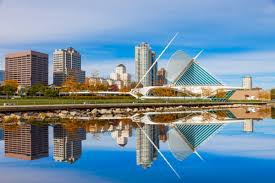
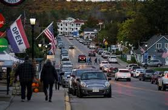
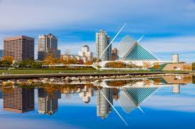
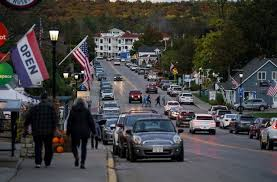

Wisconsin — AQSHning o‘rta-g‘arbiy (Midwest) qismida joylashgan shtat
bo‘lib, 1848-yil 29-mayda AQSHga 30-shtat sifatida qo‘shilgan. Shtat
o‘zining sut mahsulotlari, ko‘llari, o‘rmonlari va ishlab chiqarish
sanoati bilan mashhur.
🗺️ Geografik joylashuvi:
Shimolda: Michigan (va Lake Superior orqali Kanada bilan suv chegarasi)
Sharqda: Michigan ko‘li (Lake Michigan) Janubda: Illinois G‘arbda: Iowa va
Minnesota Hududi: ko‘plab ko‘llar, daryolar, tekisliklar, va o‘rmonli
hududlar mavjud
💼 Iqtisodiyoti:
Asosiy tarmoqlar: Qishloq xo‘jaligi — sut mahsulotlari (ayniqsa pishloq),
makkajo‘xori, g‘alla Sanoat — mashinasozlik, avtomobil qismlari, qadoqlash
sanoati O‘rmon xo‘jaligi va qog‘oz ishlab chiqarish Turizm — tabiiy
go‘zalliklar va qishki sport turlari Wisconsin — AQSHda sut mahsulotlari
bo‘yicha yetakchi shtatlardan biri hisoblanadi. “America’s Dairyland”
(Amerika sut yeri) deb ataladi.
🏞️ Diqqatga sazovor joylari:
Wisconsin Dells — suv bog‘lari, kanyonlar va oilaviy dam olish joylari
Door County — ko‘llar, mayoqchalar, bog‘lar bilan mashhur yarim orol Lake
Geneva — sayohat va dam olish uchun mashhur joy Apostle Islands National
Lakeshore — muz g‘orlar va kayak sporti Milwaukee Art Museum —
arxitekturasi va san’at kolleksiyasi bilan mashhur
🎭 Madaniyat:
Germaniya, Polsha, Skandinaviya muhojirlarining kuchli madaniy ta’siri bor
Wisconsin — pivoni yaxshi ko‘ruvchilari va pishloq ishlab chiqaruvchilari
shtati Milwaukee — Harley-Davidson kompaniyasi vatani Har yili State Fair
va ko‘plab muzika festivallari o‘tkaziladi
 


